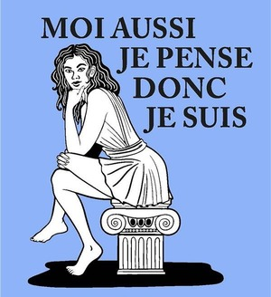

Historique et conception du café philo

Le café philosophique est un espace de discussion philosophique convivial ouvert à tous, organisé dans un café.
Il a été conceptualisé et créé par Marc Sautet en 1992 au café des Phares, place de la Bastille. Son pari était de réunir des personnes de tout âge, de toute profession, de toute condition sociale sans passer par le savoir académique rigide et souvent castrateur, mais en partant modestement de l’expérience de vie, des opinions et de la culture de chacun.
Bref, on n’est ni à l’Université, ni au café du commerce !
On peut voir dans cette initiative la suite de la pratique des salons philosophiques du 18ème ou des salons littéraires et réflexifs des 19è et 20è siècles.
La philosophie des Lumières avait d’ailleurs mis l’accent sur le caractère public d’une pensée philosophique communicable et partageable, puisqu’elle vise à l’universalité.
A l’heure où en 2026 chacun se replie sur sa sphère privée, envahi des informations en tout sens des médias et des réseaux, il est important de faire vivre des lieux de rencontre, où tout un chacun puisse, en toute quiétude, à l’écart des polémiques exercer sa capacité à penser par lui-même, en contribuant à la réflexion commune.
Rien de plus passionnant pour moi, depuis plus de 20 ans (j’ai fondé mon propre café philosophique en 2001 !) que de promouvoir dans le cadre d’un café le dialogue philosophique, dans une ambiance conviviale, où l’écoute de l’autre est la condition de la pratique du questionnement ou de l’argumentation.